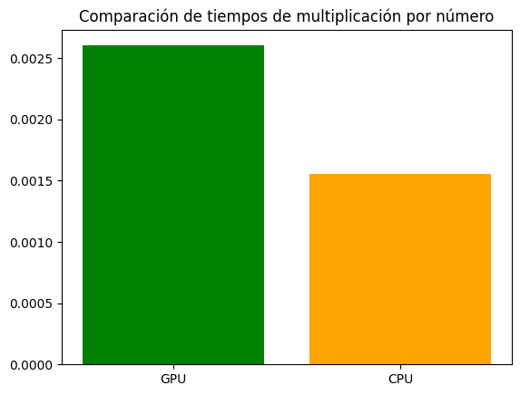
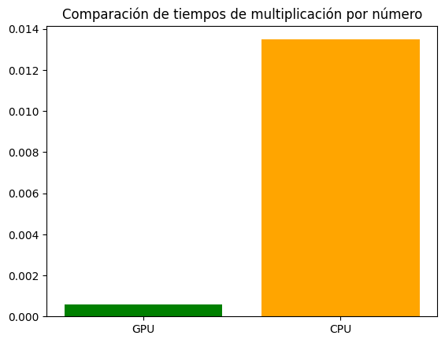

PyCUDA_multiplicar_sumar_elementos#
Instalación de la librería#
!pip install pycuda
Requirement already satisfied: pycuda in /usr/lib/python3/dist-packages (2018.1.1)
Importando las librerías#
# Para inicializar automáticamente PyCUDA y la GPU
import pycuda.autoinit
# Para interactuar directamente con el controlador de la GPU
import pycuda.driver as drv
# Para manipular arrays y operaciones en la CPU
import numpy as np
# Para compilar y cargar módulos CUDA en la GPU
from pycuda.compiler import SourceModule
# Para medir los tiempos
import time
# Para generar gráficos
import matplotlib.pyplot as plt
Verificación de los recursos de GPU#
drv.init()
print("%d dispositivo(s) encontrado." % drv.Device.count())
for i in range(drv.Device.count()):
dev = drv.Device(i)
print("\n Dispositivo #%d: %s" % (i, dev.name()))
print(" Memoria Total: %s GB" % (dev.total_memory() // (1024 * 1024 * 1024)))
print(" Capacidad de Computación: %d.%d" % dev.compute_capability())
1 dispositivo(s) encontrado.
Dispositivo #0: NVIDIA GeForce GTX 1070 with Max-Q Design
Memoria Total: 7 GB
Capacidad de Computación: 6.1
Ejemplo del uso de PyCUDA, multiplicación por número#
# Establece la semilla para reproducibilidad
np.random.seed(42)
# Crea una matriz con números aleatorios enteros entre 0 y 10
a = np.random.randint(0, 11, size=(8,8))
# Convierte la matriz a formato de punto flotante de 32 bits
a = a.astype(np.float32)
a
array([[ 6., 3., 10., 7., 4., 6., 9., 2.],
[ 6., 10., 10., 7., 4., 3., 7., 7.],
[ 2., 5., 4., 1., 7., 5., 1., 4.],
[ 0., 9., 5., 8., 0., 10., 10., 9.],
[ 2., 6., 3., 8., 2., 4., 2., 6.],
[ 4., 8., 6., 1., 3., 8., 1., 9.],
[ 8., 9., 4., 1., 3., 6., 7., 2.],
[ 0., 3., 1., 7., 3., 1., 5., 5.]], dtype=float32)
GPU#
# Asigna memoria en la GPU para la matriz
a_gpu = drv.mem_alloc(a.nbytes)
# Copia los datos de la matriz de la memoria del host a la memoria de la GPU
drv.memcpy_htod(a_gpu, a)
# Define un módulo de código CUDA
mod = SourceModule("""
__global__ void doublify(float *a)
{
//int blockId = (gridDim.x * blockIdx.y) + blockIdx.x;
//int idx = (blockId * (blockDim.x * blockDim.y)) + (threadIdx.y * blockDim.x) + threadIdx.x;
int idx= (blockIdx.x * blockDim.x + threadIdx.x) + (blockIdx.y * blockDim.y + threadIdx.y) * 8;
//int idx = threadIdx.x + threadIdx.y * blockDim.x;
a[idx] *= 2;
printf("threadIdx.x: %d, threadIdx.y:%d, blockDim.x:%d, blockDim.y :%d idx: %d\\n",threadIdx.x, threadIdx.y, blockDim.x,blockDim.y, idx);
}
""")
# Obtiene la función 'doublify' del módulo CUDA
func = mod.get_function("doublify")
# Inicia el tiempo de medición para la operación CUDA
start_time_cuda = time.time()
# Ejecuta la función 'doublify' en un bloque de 4x4 hilos
func(a_gpu, block=(4,4,1), grid=(2,2))
#func(a_gpu, block=(8,8,1))
# Sincroniza el contexto de CUDA para asegurarse de que todas las operaciones en la GPU se hayan completado
drv.Context.synchronize()
# Crea una matriz vacía con la misma forma y tipo que la matriz 'a'
a_doubled = np.empty_like(a)
# Copia los datos de la matriz procesada desde la memoria de la GPU al host
drv.memcpy_dtoh(a_doubled, a_gpu)
# Detiene el tiempo de medición para la operación CUDA
end_time_cuda = time.time()
# Calcula el tiempo total de la operación CUDA
time_cuda = end_time_cuda - start_time_cuda
print("Tiempo de ejecución CUDA: ", time_cuda)
# Imprime la matriz procesada
print("Matriz procesada:\n")
print(a_doubled)
# Imprime la matriz original
print("Matriz original:\n")
print(a)
threadIdx.x: 0, threadIdx.y:0, blockDim.x:4, blockDim.y :4 idx: 36
threadIdx.x: 1, threadIdx.y:0, blockDim.x:4, blockDim.y :4 idx: 37
threadIdx.x: 2, threadIdx.y:0, blockDim.x:4, blockDim.y :4 idx: 38
threadIdx.x: 3, threadIdx.y:0, blockDim.x:4, blockDim.y :4 idx: 39
threadIdx.x: 0, threadIdx.y:1, blockDim.x:4, blockDim.y :4 idx: 44
threadIdx.x: 1, threadIdx.y:1, blockDim.x:4, blockDim.y :4 idx: 45
threadIdx.x: 2, threadIdx.y:1, blockDim.x:4, blockDim.y :4 idx: 46
threadIdx.x: 3, threadIdx.y:1, blockDim.x:4, blockDim.y :4 idx: 47
threadIdx.x: 0, threadIdx.y:2, blockDim.x:4, blockDim.y :4 idx: 52
threadIdx.x: 1, threadIdx.y:2, blockDim.x:4, blockDim.y :4 idx: 53
threadIdx.x: 2, threadIdx.y:2, blockDim.x:4, blockDim.y :4 idx: 54
threadIdx.x: 3, threadIdx.y:2, blockDim.x:4, blockDim.y :4 idx: 55
threadIdx.x: 0, threadIdx.y:3, blockDim.x:4, blockDim.y :4 idx: 60
threadIdx.x: 1, threadIdx.y:3, blockDim.x:4, blockDim.y :4 idx: 61
threadIdx.x: 2, threadIdx.y:3, blockDim.x:4, blockDim.y :4 idx: 62
threadIdx.x: 3, threadIdx.y:3, blockDim.x:4, blockDim.y :4 idx: 63
threadIdx.x: 0, threadIdx.y:0, blockDim.x:4, blockDim.y :4 idx: 4
threadIdx.x: 1, threadIdx.y:0, blockDim.x:4, blockDim.y :4 idx: 5
threadIdx.x: 2, threadIdx.y:0, blockDim.x:4, blockDim.y :4 idx: 6
threadIdx.x: 3, threadIdx.y:0, blockDim.x:4, blockDim.y :4 idx: 7
threadIdx.x: 0, threadIdx.y:1, blockDim.x:4, blockDim.y :4 idx: 12
threadIdx.x: 1, threadIdx.y:1, blockDim.x:4, blockDim.y :4 idx: 13
threadIdx.x: 2, threadIdx.y:1, blockDim.x:4, blockDim.y :4 idx: 14
threadIdx.x: 3, threadIdx.y:1, blockDim.x:4, blockDim.y :4 idx: 15
threadIdx.x: 0, threadIdx.y:2, blockDim.x:4, blockDim.y :4 idx: 20
threadIdx.x: 1, threadIdx.y:2, blockDim.x:4, blockDim.y :4 idx: 21
threadIdx.x: 2, threadIdx.y:2, blockDim.x:4, blockDim.y :4 idx: 22
threadIdx.x: 3, threadIdx.y:2, blockDim.x:4, blockDim.y :4 idx: 23
threadIdx.x: 0, threadIdx.y:3, blockDim.x:4, blockDim.y :4 idx: 28
threadIdx.x: 1, threadIdx.y:3, blockDim.x:4, blockDim.y :4 idx: 29
threadIdx.x: 2, threadIdx.y:3, blockDim.x:4, blockDim.y :4 idx: 30
threadIdx.x: 3, threadIdx.y:3, blockDim.x:4, blockDim.y :4 idx: 31
threadIdx.x: 0, threadIdx.y:0, blockDim.x:4, blockDim.y :4 idx: 0
threadIdx.x: 1, threadIdx.y:0, blockDim.x:4, blockDim.y :4 idx: 1
threadIdx.x: 2, threadIdx.y:0, blockDim.x:4, blockDim.y :4 idx: 2
threadIdx.x: 3, threadIdx.y:0, blockDim.x:4, blockDim.y :4 idx: 3
threadIdx.x: 0, threadIdx.y:1, blockDim.x:4, blockDim.y :4 idx: 8
threadIdx.x: 1, threadIdx.y:1, blockDim.x:4, blockDim.y :4 idx: 9
threadIdx.x: 2, threadIdx.y:1, blockDim.x:4, blockDim.y :4 idx: 10
threadIdx.x: 3, threadIdx.y:1, blockDim.x:4, blockDim.y :4 idx: 11
threadIdx.x: 0, threadIdx.y:2, blockDim.x:4, blockDim.y :4 idx: 16
threadIdx.x: 1, threadIdx.y:2, blockDim.x:4, blockDim.y :4 idx: 17
threadIdx.x: 2, threadIdx.y:2, blockDim.x:4, blockDim.y :4 idx: 18
threadIdx.x: 3, threadIdx.y:2, blockDim.x:4, blockDim.y :4 idx: 19
threadIdx.x: 0, threadIdx.y:3, blockDim.x:4, blockDim.y :4 idx: 24
threadIdx.x: 1, threadIdx.y:3, blockDim.x:4, blockDim.y :4 idx: 25
threadIdx.x: 2, threadIdx.y:3, blockDim.x:4, blockDim.y :4 idx: 26
threadIdx.x: 3, threadIdx.y:3, blockDim.x:4, blockDim.y :4 idx: 27
threadIdx.x: 0, threadIdx.y:0, blockDim.x:4, blockDim.y :4 idx: 32
threadIdx.x: 1, threadIdx.y:0, blockDim.x:4, blockDim.y :4 idx: 33
threadIdx.x: 2, threadIdx.y:0, blockDim.x:4, blockDim.y :4 idx: 34
threadIdx.x: 3, threadIdx.y:0, blockDim.x:4, blockDim.y :4 idx: 35
threadIdx.x: 0, threadIdx.y:1, blockDim.x:4, blockDim.y :4 idx: 40
threadIdx.x: 1, threadIdx.y:1, blockDim.x:4, blockDim.y :4 idx: 41
threadIdx.x: 2, threadIdx.y:1, blockDim.x:4, blockDim.y :4 idx: 42
threadIdx.x: 3, threadIdx.y:1, blockDim.x:4, blockDim.y :4 idx: 43
threadIdx.x: 0, threadIdx.y:2, blockDim.x:4, blockDim.y :4 idx: 48
threadIdx.x: 1, threadIdx.y:2, blockDim.x:4, blockDim.y :4 idx: 49
threadIdx.x: 2, threadIdx.y:2, blockDim.x:4, blockDim.y :4 idx: 50
threadIdx.x: 3, threadIdx.y:2, blockDim.x:4, blockDim.y :4 idx: 51
threadIdx.x: 0, threadIdx.y:3, blockDim.x:4, blockDim.y :4 idx: 56
threadIdx.x: 1, threadIdx.y:3, blockDim.x:4, blockDim.y :4 idx: 57
threadIdx.x: 2, threadIdx.y:3, blockDim.x:4, blockDim.y :4 idx: 58
threadIdx.x: 3, threadIdx.y:3, blockDim.x:4, blockDim.y :4 idx: 59
Tiempo de ejecución CUDA: 0.0026025772094726562
Matriz procesada:
[[12. 6. 20. 14. 8. 12. 18. 4.]
[12. 20. 20. 14. 8. 6. 14. 14.]
[ 4. 10. 8. 2. 14. 10. 2. 8.]
[ 0. 18. 10. 16. 0. 20. 20. 18.]
[ 4. 12. 6. 16. 4. 8. 4. 12.]
[ 8. 16. 12. 2. 6. 16. 2. 18.]
[16. 18. 8. 2. 6. 12. 14. 4.]
[ 0. 6. 2. 14. 6. 2. 10. 10.]]
Matriz original:
[[ 6. 3. 10. 7. 4. 6. 9. 2.]
[ 6. 10. 10. 7. 4. 3. 7. 7.]
[ 2. 5. 4. 1. 7. 5. 1. 4.]
[ 0. 9. 5. 8. 0. 10. 10. 9.]
[ 2. 6. 3. 8. 2. 4. 2. 6.]
[ 4. 8. 6. 1. 3. 8. 1. 9.]
[ 8. 9. 4. 1. 3. 6. 7. 2.]
[ 0. 3. 1. 7. 3. 1. 5. 5.]]
CPU#
# Inicia el tiempo de medición para la operación con bucle en cpu
start_time_cpu = time.time()
# Duplica cada elemento de la matriz utilizando un bucle for
a_doubled_python = np.empty_like(a)
for i in range(a.shape[0]):
for j in range(a.shape[1]):
a_doubled_python[i, j] = a[i, j] * 2
# Detiene el tiempo de medición para la operación con bucle en Python
end_time_cpu = time.time()
# Calcula el tiempo total de la operación con bucle en Python
time_cpu= end_time_cpu - start_time_cpu
print("Tiempo de ejecución cpu: ", time_cpu)
Tiempo de ejecución cpu: 0.0015554428100585938
np.array_equal(a_doubled_python,a_doubled)
True
Comparación GPU vs CPU#
# Nombres de las operaciones
labels = ['GPU', 'CPU']
# Valores de tiempo
values = [time_cuda, time_cpu]
# Graficar en barras con escala logarítmica en el eje y
plt.bar(labels, values, color=['green', 'orange'])
plt.title('Comparación de tiempos de multiplicación por número')
plt.show()

Suma de matrices#
# Establece la semilla para reproducibilidad
np.random.seed(42)
# Crear dos matrices aleatorias
b = np.random.randint(0, 11, size=(128, 128)).astype(np.float32)
c = np.random.randint(0, 11, size=(128, 128)).astype(np.float32)
# Imprime las matrices originales
print("Matriz 'b':")
print(b)
print("\nMatriz 'c':")
print(c)
Matriz 'b':
[[ 6. 3. 10. ... 6. 6. 10.]
[ 8. 9. 9. ... 0. 1. 0.]
[ 4. 4. 10. ... 2. 8. 9.]
...
[ 4. 4. 7. ... 9. 5. 6.]
[ 8. 0. 3. ... 3. 9. 8.]
[ 3. 3. 6. ... 0. 1. 5.]]
Matriz 'c':
[[ 8. 4. 3. ... 1. 7. 5.]
[ 6. 0. 5. ... 9. 0. 7.]
[ 0. 8. 5. ... 5. 0. 1.]
...
[ 0. 1. 3. ... 6. 1. 9.]
[ 1. 5. 8. ... 10. 1. 10.]
[ 6. 0. 3. ... 8. 9. 4.]]
GPU#
# Definición del módulo de CUDA que contiene la función del kernel
mod2 = SourceModule("""
__global__ void add2(float *a, float *b)
{
int idx = (blockIdx.x * blockDim.x + threadIdx.x) + (blockIdx.y * blockDim.y + threadIdx.y) * 128;
a[idx] += b[idx];
}
""")
# Asignar memoria en la GPU para las matrices
b_gpu = drv.mem_alloc(b.nbytes)
c_gpu = drv.mem_alloc(c.nbytes)
# Copiar los datos de las matrices al dispositivo (GPU)
drv.memcpy_htod(b_gpu, b)
drv.memcpy_htod(c_gpu, c)
# Obtener la función del kernel compilado
func = mod2.get_function("add2")
# Iniciar el cronómetro
start_time = time.time()
# Llamar a la función del kernel con las matrices como argumentos
func(b_gpu, c_gpu, block=(32,32,1), grid=(4,4))
# Crear un array vacío del mismo tamaño que b para almacenar el resultado
added = np.empty_like(b)
# Copiar los resultados desde la memoria de la GPU al array creado
drv.memcpy_dtoh(added, b_gpu)
# Parar el cronómetro
end_time = time.time()
# Calcular la duración
duration1 = end_time - start_time
# Imprimir los resultados
print("Matriz B:\n")
print(b)
print("Matriz C:\n")
print(c)
print("Resultado suma:\n")
print(added)
# Imprimir el tiempo de ejecución
print("Tiempo de ejecución: {:.6f} segundos".format(duration1))
Matriz B:
[[ 6. 3. 10. ... 6. 6. 10.]
[ 8. 9. 9. ... 0. 1. 0.]
[ 4. 4. 10. ... 2. 8. 9.]
...
[ 4. 4. 7. ... 9. 5. 6.]
[ 8. 0. 3. ... 3. 9. 8.]
[ 3. 3. 6. ... 0. 1. 5.]]
Matriz C:
[[ 8. 4. 3. ... 1. 7. 5.]
[ 6. 0. 5. ... 9. 0. 7.]
[ 0. 8. 5. ... 5. 0. 1.]
...
[ 0. 1. 3. ... 6. 1. 9.]
[ 1. 5. 8. ... 10. 1. 10.]
[ 6. 0. 3. ... 8. 9. 4.]]
Resultado suma:
[[14. 7. 13. ... 7. 13. 15.]
[14. 9. 14. ... 9. 1. 7.]
[ 4. 12. 15. ... 7. 8. 10.]
...
[ 4. 5. 10. ... 15. 6. 15.]
[ 9. 5. 11. ... 13. 10. 18.]
[ 9. 3. 9. ... 8. 10. 9.]]
Tiempo de ejecución: 0.000581 segundos
CPU#
# Iniciar el cronómetro
start_time = time.time()
# Crear un array vacío del mismo tamaño que b para almacenar el resultado
addedCPU = np.empty_like(b)
# Realizar la suma elemento a elemento
for i in range(b.shape[0]):
for j in range(b.shape[1]):
addedCPU[i, j] = b[i, j] + c[i, j]
# Parar el cronómetro
end_time = time.time()
# Calcular la duración
duration2 = end_time - start_time
# Imprimir los resultados
print("Matriz B:\n", b)
print("Matriz C:\n", c)
print("Resultado suma:\n", addedCPU)
# Imprimir el tiempo de ejecución
print("Tiempo de ejecución en CPU: {:.6f} segundos".format(duration2))
Matriz B:
[[ 6. 3. 10. ... 6. 6. 10.]
[ 8. 9. 9. ... 0. 1. 0.]
[ 4. 4. 10. ... 2. 8. 9.]
...
[ 4. 4. 7. ... 9. 5. 6.]
[ 8. 0. 3. ... 3. 9. 8.]
[ 3. 3. 6. ... 0. 1. 5.]]
Matriz C:
[[ 8. 4. 3. ... 1. 7. 5.]
[ 6. 0. 5. ... 9. 0. 7.]
[ 0. 8. 5. ... 5. 0. 1.]
...
[ 0. 1. 3. ... 6. 1. 9.]
[ 1. 5. 8. ... 10. 1. 10.]
[ 6. 0. 3. ... 8. 9. 4.]]
Resultado suma:
[[14. 7. 13. ... 7. 13. 15.]
[14. 9. 14. ... 9. 1. 7.]
[ 4. 12. 15. ... 7. 8. 10.]
...
[ 4. 5. 10. ... 15. 6. 15.]
[ 9. 5. 11. ... 13. 10. 18.]
[ 9. 3. 9. ... 8. 10. 9.]]
Tiempo de ejecución en CPU: 0.013484 segundos
np.array_equal(added,addedCPU)
True
# Nombres de las operaciones
labels = ['GPU', 'CPU']
# Valores de tiempo
values = [duration1, duration2]
# Graficar en barras con escala logarítmica en el eje y
plt.bar(labels, values, color=['green', 'orange'])
plt.title('Comparación de tiempos de multiplicación por número')
plt.show()

import pycuda.driver as cuda
import pycuda.autoinit
from pycuda.compiler import SourceModule
# Define el código del kernel de CUDA
kernel_code = """
__global__ void print_kernel()
{
printf("Hello from block %d, thread %d\\n", blockIdx.x, threadIdx.x);
}
"""
# Compila el kernel
mod = SourceModule(kernel_code)
# Obtiene la función del kernel
print_kernel = mod.get_function("print_kernel")
# Lanza el kernel
print_kernel(block=(1, 1, 1), grid=(1, 1))
# Sincroniza para asegurar que se completa la ejecución del kernel
cuda.Context.synchronize()
Hello from block 0, thread 0